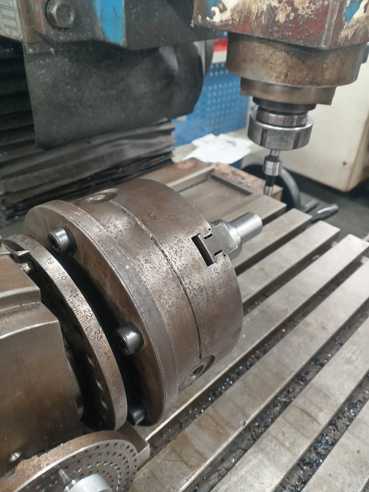

Daily Work Gallery
Alex Carter
A collection of my day-to-day shop floor work, machining projects, and videos.
Media & Projects


0%
Alex Carter
A collection of my day-to-day shop floor work, machining projects, and videos.
